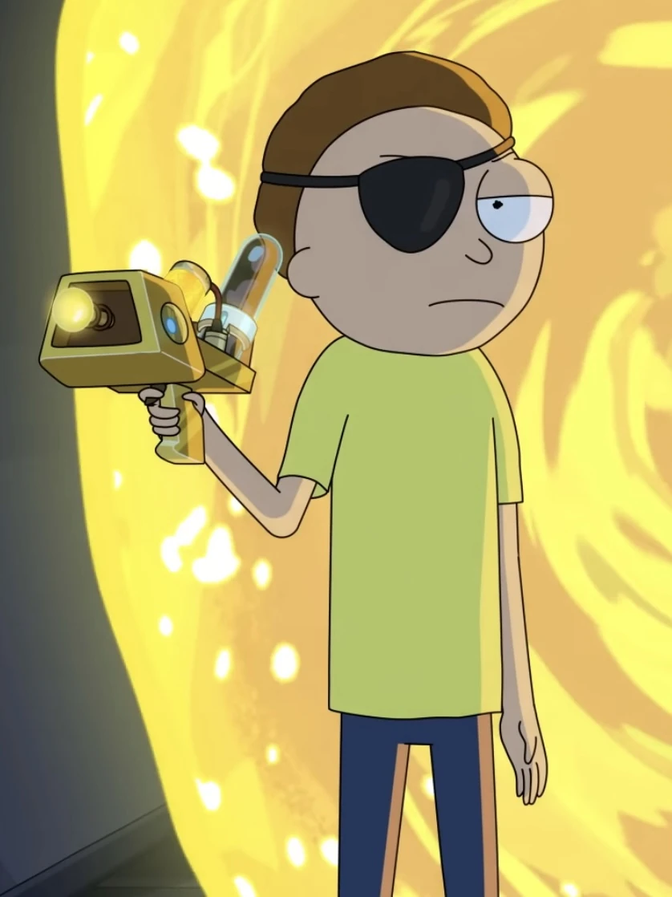
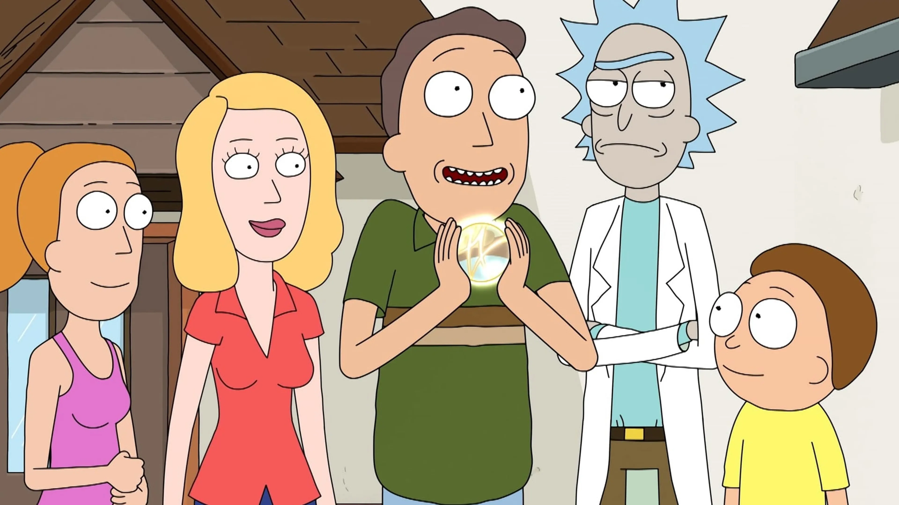

Sobre la Serie
Rick Sánchez es el estereotipo del «científico
loco». Es un genio y buen tipo, pero es irresponsable, poco arreglado, alcohólico, egoísta, depresivo,
sarcástico y con poca cordura. Rick por no poder pagar la renta de su antigua casa termina mudándose a la casa
de su hija Beth y en ese momento se encuentra con su nieto Morty; un joven de 14 años sin expresión, tímido y no
muy listo. Al juntarse con su nieto, Rick y Morty viven una variedad de aventuras a lo largo de universos
paralelos. Y es mediante tantas vivencias y reflexiones que Rick busca que su nieto Morty no acabe como su
padre, Jerry, un hombre muy poco exitoso que a pesar de tener buenas intenciones resulta ser bastante inútil en
muchas ocasiones y depende mucho de su esposa, Beth.
A pesar de estar muy apegados, Rick y su nieto experimentan momentos en los que Summer Smith, hermana de Morty,
se une en ocasiones a las pintorescas aventuras provocadas por Rick.
Personajes Principales
- Rick
- Morty 
- Family 